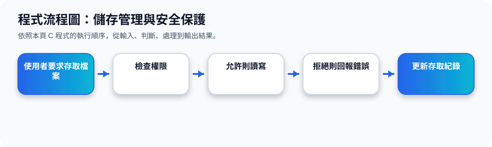

二、Storage Management：OS 如何管理儲存裝置？
核心觀念 OS 提供一致、邏輯化的儲存資訊觀點。使用者看到的是檔案與目錄，而不是磁碟內部的磁區、區塊與實體位置。
使用者看到的邏輯層
OS 管理的實體層
對應到磁碟區塊、SSD 區塊、目錄結構與備份空間。
Storage Management 動畫
三、File-System Management：檔案系統做什麼？
投影片 25 提到 file system management 包含檔案與目錄的建立、刪除，以及把檔案對應到次級儲存裝置。
Files 通常組成 Directories
目錄讓檔案可以被分類、搜尋與管理。
Access Control
檔案系統會決定誰可以讀、寫、執行或修改檔案。
Mapping
OS 會把檔案名稱與目錄結構，對應到實際的儲存區塊。
Backup
重要資料可備份到穩定的非揮發性儲存裝置中。
四、Protection：限制誰可以用哪些資源
Protection 是控制行程或使用者能否存取特定資源的機制。它不是只保護檔案，也包含記憶體、CPU、I/O 裝置與系統服務。
User / Process
提出要求
OS Protection
檢查身分與權限
Resource
File、Memory、I/O、System Call
Protection 判斷流程動畫
五、Security：防止內外部攻擊
Security 的範圍比 protection 更廣，重點是保護系統不被內部或外部攻擊，例如 denial-of-service、worms、viruses、identity theft 與 theft of service。
Security
User ID / Group ID
OS 透過身分辨識使用者與群組，判斷可使用的資源。
Privilege Escalation
系統也可能允許特定使用者暫時提高權限，以完成管理工作。
簡單記法：Protection 偏向「資源存取控制」；Security 偏向「整體系統安全與攻擊防護」。
程式流程圖與流程講解
程式流程圖：儲存管理與安全保護

流程講解
可編輯 C 程式範例與線上編輯器
可編輯 C 程式：儲存管理與安全保護
這段程式依照上方流程圖設計，包含中文註解，適合貼到線上編輯器直接執行與修改。
程式題目完整教學內容
程式題目完整教學：儲存管理與安全保護
一、程式題目講解
用 rwx 權限概念模擬檔案存取控制。
重點是讀、寫、執行權限與請求類型比對：只有請求符合權限時才允許操作。
二、完整程式碼
以下程式碼可直接複製到 C 語言線上編譯器執行。程式中已加入中文註解，說明主要變數、判斷流程與輸出目的。
#include <stdio.h>
/*
主題 8：儲存管理與安全保護
功能：用 rwx 權限概念模擬檔案存取檢查。
*/
int main(void) {
int canRead = 1, canWrite = 0, canExecute = 1;
char request = 'w';
printf("使用者要求：%c\n", request);
if (request == 'r' && canRead)
printf("允許讀取檔案。\n");
else if (request == 'w' && canWrite)
printf("允許寫入檔案。\n");
else if (request == 'x' && canExecute)
printf("允許執行檔案。\n");
else
printf("拒絕存取：權限不足。\n");
return 0;
}三、程式執行結果
使用者要求：w
拒絕存取：權限不足。結果說明：重點是讀、寫、執行權限與請求類型比對：只有請求符合權限時才允許操作。 程式依照設定的資料與控制流程逐步輸出，因此可以從結果看到每個步驟的執行順序與狀態變化。
四、程式流程圖與流程圖說明
本頁上方已提供對應的程式流程圖，圖中以「開始、資料設定、條件判斷、重複處理、輸出結果、結束」呈現程式執行順序。
程式先設定使用者權限與要求，再用 if / else if 判斷 read、write、execute，若不符合則拒絕存取。
五、重要函數與語法說明
char request 儲存使用者請求；&& 表示兩個條件都要成立；if/else if/else 建立權限判斷流程。
六、整體說明
本題的學習重點是把作業系統概念轉成可觀察的 C 程式流程。學生應先理解題目概念，再對照程式碼、流程圖與執行結果，掌握變數設定、條件判斷、迴圈處理與輸出結果之間的關係。